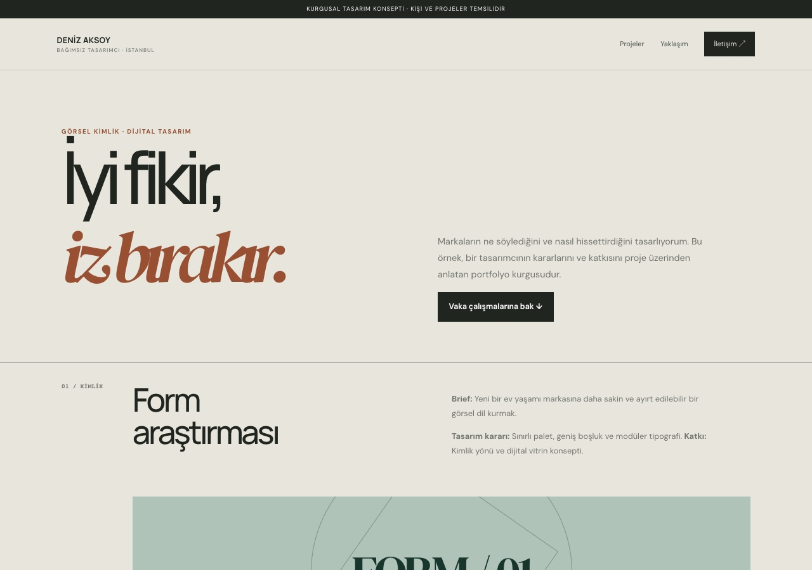
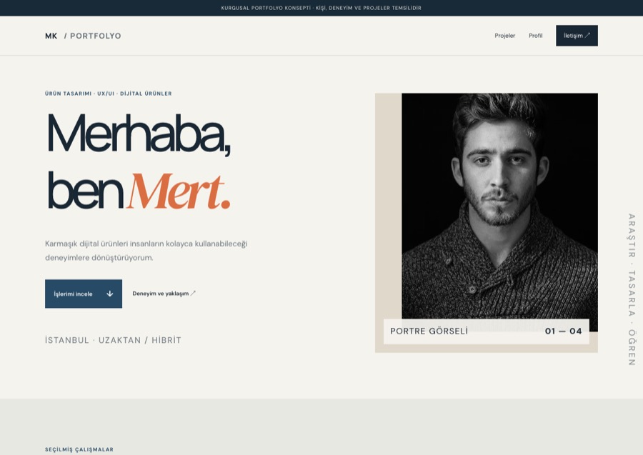
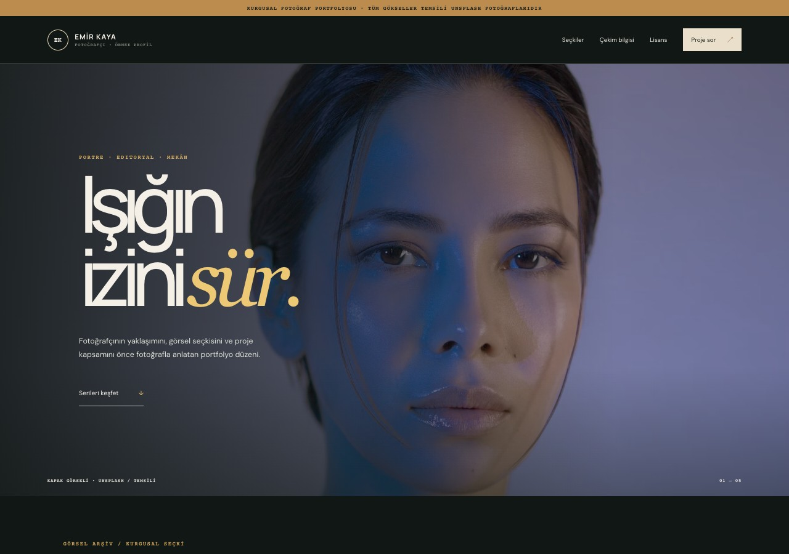
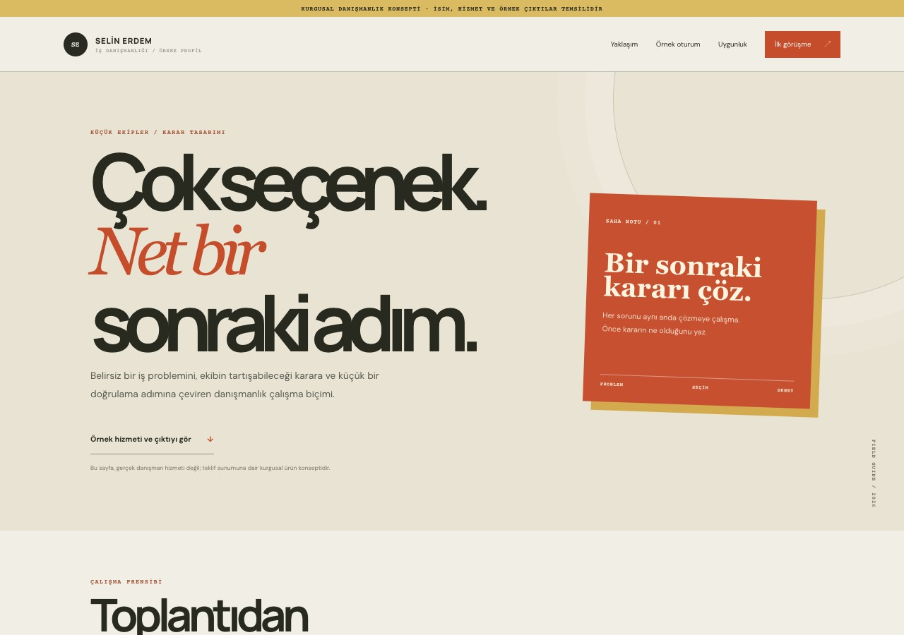
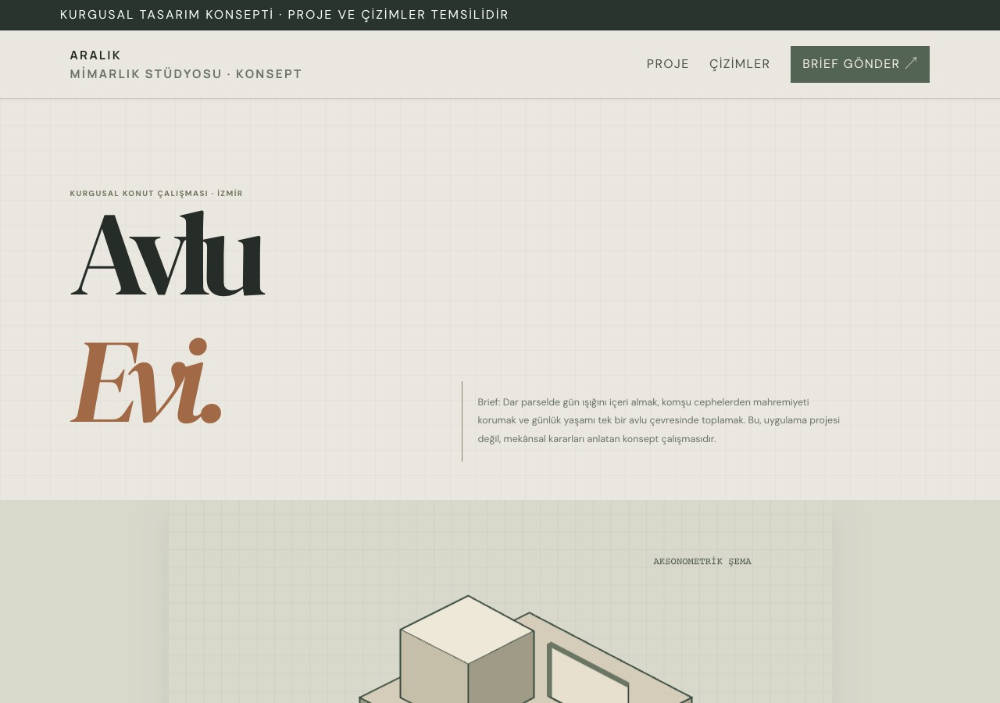
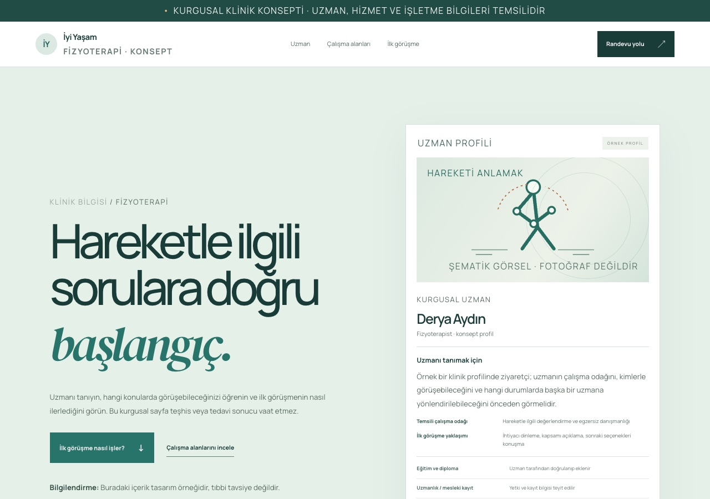
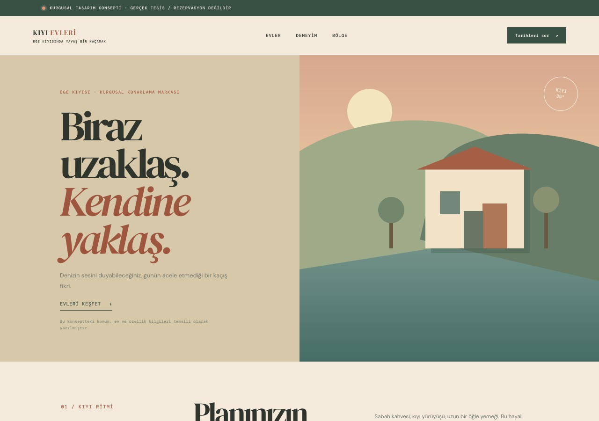
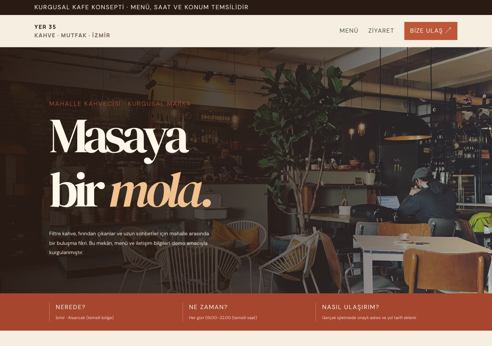
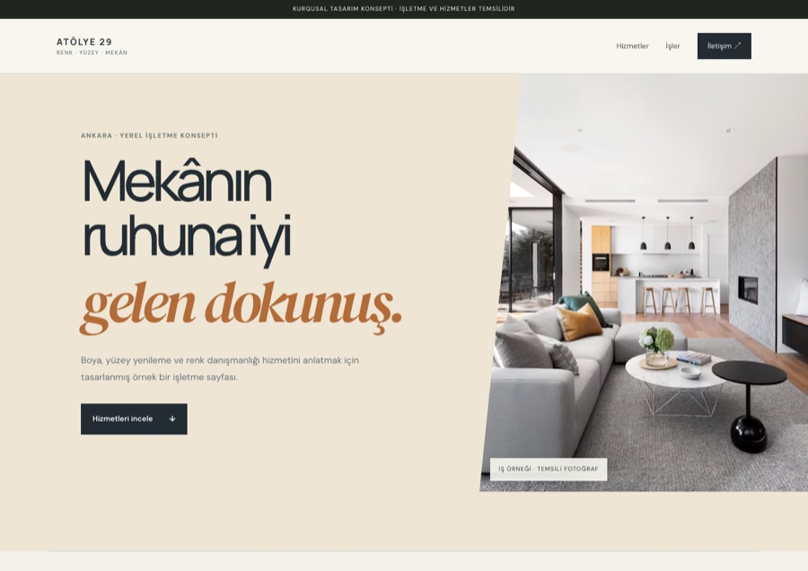

CİZGİFİKRİM · WEB SİTESİ DEMO GALERİSİ
Dokuz alan.
Dokuz ayrı site örneği.
Burası demo sitelerin seçki ekranı. Her kart, ilgili kategori için hazırlanmış ayrı bir örnek siteyi açar.
09KATEGORİ DEMOSU
Her kart ayrı bir demo sayfaya açılır. Fotoğrafçı portfolyosundan klinik tanıtımına, kafe menüsünden mimarlık proje sunumuna kadar bir kategori seçin. İsimler, işletmeler ve görseller kurgusaldır; demolar gerçek müşteri işi ya da hazır satılan şablon değildir.

Kişisel portfolyo
Vaka çalışmaları, tasarım kararları, kişisel yaklaşım

Uzman tanıtımı & özgeçmiş
Kronolojik deneyim, beceriler, seçilmiş işler

Fotoğrafçı portfolyosu
Görsel seçki, fotoğraf serileri, çekim akışı

Danışmanlık & koçluk
Uzmanlık alanları, çalışma biçimi, iletişim

Mimarlık stüdyosu
Proje seçkisi, stüdyo yaklaşımı, hizmetler

Klinik & uzman tanıtımı
Uzmanlık alanları, klinik bilgisi, iletişim

Konaklama & turizm
Konaklama seçkisi, olanaklar, konum ve müsaitlik adımı

Kafe & restoran
Menü düzeni, fiyat alanı, saat ve yol tarifi

Yerel işletme tanıtımı
Hizmet kapsamı, teklif için gereken bilgi, iş süreci
SİZİN İŞİNİZ İÇİN